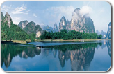

Since the 18th CPC National Congress, the CPC Central Committee, with Comrade Xi Jinping as General Secretary, has attached great importance to ecological civilization and environmental protection, put forward a series of new ideas and requirements, and made a series of major arrangements. Under the strong leadership of the Central Committee of the Party and the State Council, all units, departments and all sectors of society have made concerted efforts to calmly meet the challenges, struggle to overcome difficulties, and deepen the reform of the ecological and cultural system with a strong focus on building a beautiful China. We resolutely declared war on pollution, focusing on the control of air, water and soil pollution, and achieved remarkable results in ecological and environmental protection in China. Environmental
Examples of exemplary environmental
Environmental protection protects
In recent years, the autonomous region has fully implemented the central government's decision-making and deployment, put people first and put people's livelihood first, and made great efforts to solve a number of outstanding environmental problems, such as water pollution and atmospheric pollution, which are harmful to the health of the people and affect sustainable development. It is understood that since 2008, the air quality in Xinjiang's urban environment has improved slightly. The number of days better than the second grade has increased from 73.9 at the end of the "Tenth Five-Year Plan" to 85.5.

In 2016, China implemented the "Ten Atmosphere Rules", and a number of measures to improve the quality of the atmosphere went hand in hand. As of the end of November of that year, the country's coal combustion units had completed a total of 425 million kilowatts of ultra-low emissions, accounting for 47 % of the total coal power installed capacity, and Hebei, Henan and other provinces have basically completed the reconstruction task; Scattered coal replacement, small coal boiler elimination, industrial enterprise bid improvement and other governance tasks accelerated; A total of 4.058 million yellow standard vehicles and old vehicles were eliminated nationwide, completing 106.5 % of the total annual elimination tasks. At the same time, it has fully completed the task of monitoring the monitoring rights of 1,436 state-controlled air quality monitoring cities.

Accelerating Legislation on Pollution
Accelerating Legislation on Pollution
In view of the fact that the city's industrial structure emphasizes the status quo, the city has surrounded the rise of green, held high the banner of structural adjustment, and launched a three-year jump plan for the industrial economy. We will promote the leading adjustment through new and high-tech programs, promote adjustment through the concentration of advantageous industries, encourage and adjust policies for innovation and support, and force adjustment by optimizing and integrating resources. The cultivation has formed pillar industries and industrial clusters such as power transmission and transformation.